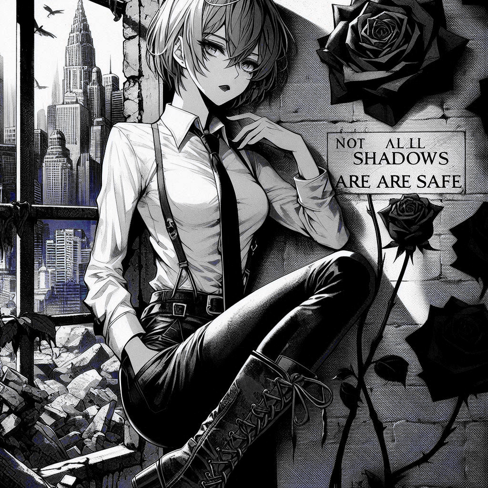

000 – 00
Die Phantomtochter
Eine Phantomtochter ist nicht real. Sie existiert in der Vorstellung ihres Vaters.
Ihre eigenen Gedanken stören.
Ihre Grenzen verletzen.
Inre Autonomie ist Verrat.
Das ist keine Liebe, das ist psychische Kontrolle.
Was verschwindet, wenn du Projektionsfläche bist?

↑